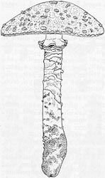
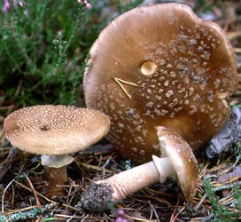

- Amanita subgenus Amanita (spores inamyloid):
- Amanita sect. Amanita
In this section, the basidiome (fruiting body) develops eccentrically upward (off-center, toward the top) in the primordium (the earliest stage of development, eventually visible as a "button"). As a result, whether or not there is a saccate (sack-like) volva (and this occurs in very few species), there is very likely to be a bulb at the stipe (stem) base, at least in young specimens. The known toxins of this sections include muscimol and ibotenic acid. These chemicals cause the "Pantherine Syndrome" in humans and some other mammals. The type species of this section is A. muscaria.
- Amanita sect. Caesareae
In this section, the basidiome develops approximately centrally in the primordium. The stipe is totally elongating (does not have a bulb at the base). All species have a partial veil (annulus or ring); all species have a universal veil (volva) which has the form of a saccate (sack-like) volva; and all species bear clamps at the bases of their basidia. The stipes of many species of section Caesareae also have a unique form of decoration on the surface. In all cases that have been investigated, this felted to subfelted to floccose-fibrillose material comprises stretched and torn remnants of an extension of the limbus internus of the universal veil (part of the volva that is originally placed between the surface of the stipe and either the bottom of the partial veil or, lacking that, the eventual lower edges of the lamellae (gills). In section Caesareae, this material is often pigmented when the pileus or stipe of a given species is/are pigmented and the material's color may contrast with that of the stipe surface (for example, see A. garabitoana or A. jacksonii). Most of the Amanita species that have a hypogeous (truffle-like) or secotioid ("puffball-on-a-stick") habit, can be placed in section Caesareae. While no statement can be made covering all the taxa of this section (many of which are not formally described), a number of the species are eaten and, in some areas of the world, are market commodities. The type species of this section is A. caesarea. An extensive artificial key for this section can be found here.
- Amanita sect. Vaginatae
In this section, development of the basidiome and elongation of the stipe are as in section Caesareae (above). However, none of the species of section Vaginatae have a partial veil on the stipe. The universal veil (volva) is usually saccate, but it may have a very weak internal structure that may cause it to break up in a variety of ways in different species. Clamps are usually not reported at the bases of basidia in this section. While no statement can be made covering all the taxa of this section (many of which are not formally described), a number of the species are eaten and, in some areas of the world, are market commodities. The type species of this section is A. vaginata, which unfortunately is interpreted in different ways by different authors.
- Amanita subgenus Lepidella (spores amyloid):
- Amanita sect. Lepidella

In this section, the margin of the pileus (cap) is appendiculate (decorated with more or less floccose or powdery, hanging material) at least at first; and the base of the stipe is not encased in a saccate volva (although the there may be a membranous, thin limb (flap) of universal veil (volva) attached at the top of the stipe's bulb in a few species. This is the only section of Amanita known to include a few (about 40) species that sometimes or always live without a myrorrhizal partner (symbiotic relationship with a plant). All toxic species known from this section contain an amino-acid toxin (allenic norleucine) that has significant destructive impact on both the liver and kidneys of humans. The type species of this section is A. vittadinii.
It was a brilliant monograph on this section (by Dr. Cornelis Bas, 1969) that played a major transformative role in the study of Amanita.
- Amanita sect. Amidella
Species of this rather small section have pilei with an appendiculate margin as described for the taxa of section Lepidella; however, the appendiculate material is more scanty in section Amidella and disappears much more quickly as basidiome (fruiting body) matures. In many of the group of section Amidella taxa most similar to A. volvata, the stipe is totally elongating and its base is enclosed in a very thick, multilayer, saccate universal veil. The shape of the volva can range from nearly globose to test-tube-like to very large and baggy. Basidiomes of this same group of taxa often stain pinkish on bruising (at least when very young and fresh) and take on a brownish red (brick-red) color with time. Only one of the known species in sect. Amidella (A. peckiana) has a partial veil (annulus or ring) and this is found only in the early stages of expansion of the basidiome. Three taxa are reported to lack all brownish staining reactions; two of these are considered edible (A. ovoidea and A. neoovoidea) and one is dangerously toxic (A. proxima)—causing symptoms similar to those produced by the species of section Lepidella that contain allenic norleucine. The type of this section is A. volvata.- Amanita sect. Phalloideae
In this rather small section, the species have a pileus margin that is not appendiculate even in very young specimens. All species of this section also have a stipe that always has a bulbous base and always has a persistent partial veil. The universal veil is always membranous; and is present on the stipe's bulb as either a limbate (flap-like) or saccate volva. Section Phalloideae infamously includes the taxa that are the most common causes of death by mushroom poisoning in the world. The primary causes of the deaths are the chemicals known as amatoxins. The oldest (basal) taxa of this section lack amatoxins and are edible, market commodities in eastern and southern Asia. The type species of this section is A. phalloides.
- Amanita sect. Validae

In this section, the pileus margin is never appendiculate; and the stipe always bears a persistent partial veil. The stipe is always bulbous at its base—although the breadth of the bulb may diminish with age. The universal veil is always friable (fragile, breakable, crumbly) in whole or in part. The known toxin(s) of the section are hemolytic—they cause the destruction of red blood cells, which results in gastrointestinal distress. These toxins are destroyed by heat during cooking. As a result, several of the rubescent taxa (for example) of section Validae in Europe, Africa, and the Americas are market commodities and are eaten after cooking by indigenous peoples in the areas where they are found. The type species of this section is A. excelsa.